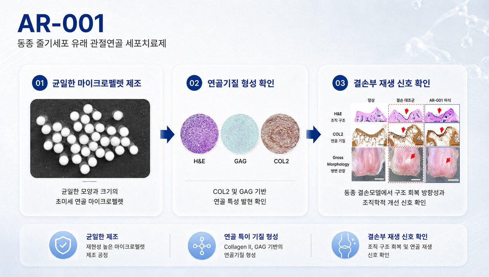
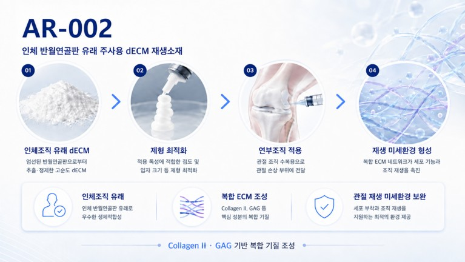
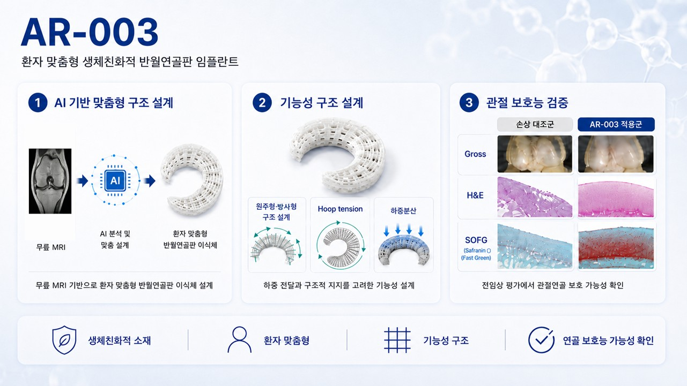

Three products, one regenerative platform.세 가지 제품, 하나의 재생 플랫폼.
ArthRegen develops an integrated pipeline that responds to the stage-by-stage unmet needs of joint damage — building a regenerative microenvironment, restoring structural function, and regenerating cartilage through cells. AR-001 is a WJ-MSC-based ultra-fine cartilage micropellet cell therapy, AR-002 is a decellularized-ECM-based regenerative biomaterial, and AR-003 is a patient-specific meniscus implant — each addressing a distinct treatment gap.아스리젠은 관절 손상의 단계별 미충족 수요에 대응하기 위해 재생 미세환경 조성, 구조적 기능 회복, 세포 기반 연골 재생으로 이어지는 통합 파이프라인을 개발합니다. AR-001은 WJ-MSC 기반 초미세 연골 마이크로펠렛 세포치료제, AR-002는 탈세포화 ECM 기반 재생소재, AR-003은 환자 맞춤형 반월연골판 임플란트로 각각 다른 치료 공백을 해결합니다.
A simple, stage-based table for current development.현재 개발 단계에 맞춘 단순 파이프라인 표.
| Platform플랫폼 | Pipeline파이프라인 | Indication적응증 | Discovery탐색 | Preclinical전임상 | Phase 1임상 1상 | Phase 2임상 2상 | Phase 3임상 3상 |
|---|---|---|---|---|---|---|---|
| Cell therapy세포치료제 | AR-001 | Articular cartilage regeneration관절연골 재생 | |||||
| Human tissue인체조직 | AR-002 | Soft-tissue regeneration연부조직 재생 | |||||
| Medical device의료기기 | AR-003 | Damaged meniscus replacement손상된 반월연골판 대체 | |||||
AR-001
A cell therapy for the regeneration and functional recovery of damaged articular cartilage. AR-001 is a cell therapy in development that aims to regenerate and restore the function of damaged articular cartilage. By producing allogeneic Wharton's-jelly-derived mesenchymal stem cells as uniform, ultra-fine micropellets, it provides a treatment platform suitable for cartilage matrix formation and tissue regeneration.손상된 관절연골의 재생과 기능 회복을 위한 세포치료제. AR-001은 손상된 관절연골의 재생과 기능 회복을 목표로 개발 중인 세포치료제입니다. 동종 와튼젤리 유래 중간엽줄기세포를 균일한 초미세 마이크로펠렛 형태로 구현하여, 연골기질 생성과 조직 재생에 적합한 치료 플랫폼을 제공합니다.
- Uniform manufacturing균일한 제조 — cell aggregates of consistent size and morphology세포응집체의 일정한 크기와 형태
- Cartilage-matrix generation연골기질 생성능 — confirmed expression of COL2, GAG, and other core cartilage componentsCOL2, GAG 등 연골 핵심 성분 확인
- Stability-based design안정성 기반 설계 — productization strategy that accounts for storage and transport conditions보관·운송 조건을 고려한 제품화 전략
- Regenerative target재생 치료 타깃 — patients with articular cartilage damage prior to total joint replacement인공관절 이전 단계의 관절연골 손상 환자

Click the image to enlarge 이미지를 클릭하면 확대됩니다
Competitive positioning of AR-001AR-001의 경쟁력 비교
| Category구분 | Conventional autologous cell therapy기존 자가세포 치료 | Conventional allogeneic cell therapy기존 동종세포 치료 | AR-001AR-001 |
|---|---|---|---|
| Cell source세포 원료 | Patient-derived cells환자 유래 세포 | Allogeneic MSC동종 MSC | Allogeneic WJ-MSC동종 WJ-MSC |
| Manufacturing제조 특성 | Patient-customized환자별 맞춤 제조 | Varies by process / cell source공정·세포원에 따라 상이 | Uniform ultra-fine micropellets균일한 초미세 마이크로펠렛 |
| Cell form세포 형태 | Cell- or tissue-type products세포 또는 조직형 제재 | Single-cell focused단일세포 중심 | 3D cartilage micropellets3D 연골 마이크로펠렛 |
| Supply / storage공급·보관 | Long manufacturing lead time긴 제조 리드타임 | Pre-op preparation required수술 전 준비 필요 | 6-day manufacturing · 7-day refrigerated storage6일 제조 · 7일 냉장 보관 |
| Direction개발 방향 | Defect filling결손부 보완 | Anti-inflammatory · regenerative support항염·재생 보조 | Structural regeneration + functional recovery구조 재생 + 기능 회복 지향 |
AR-002
A regenerative biomaterial based on decellularized meniscus-derived ECM. AR-002 processes human tissue derived from the meniscus through a high-yield decellularization process, designed to preserve the ECM components and tissue-specific characteristics needed for soft-tissue regeneration.반월연골판 유래 탈세포화 ECM 기반 재생소재. AR-002는 반월연골판 유래 인체조직을 고효율 탈세포화 공정으로 처리하여, 연부조직 재생에 필요한 ECM 성분과 조직 고유의 특성을 보존하도록 설계된 재생소재입니다.
- Native meniscus ECM반월연골판 고유 ECM — preservation of Collagen type II, GAG, and other joint-tissue matrix componentsCollagen type II, GAG 등 관절 조직 기질 성분 보존
- High-yield decellularization고효율 탈세포화 — removes cellular components while preserving ECM structure and biological properties세포 성분을 제거하고 ECM 구조와 생물학적 특성 유지
- Regenerative microenvironment재생 미세환경 조성 — designed to reinforce damaged tissue and build a regeneration-friendly environment in the joint손상 조직의 보강과 관절 재생 환경 조성 지향
- Versatile application적용 형태 확장 — intra-articular injectable formulation관절강 내 주사형 소재

Click the image to enlarge 이미지를 클릭하면 확대됩니다
AR-003
A patient-specific, 3D-printed meniscus implant. AR-003 analyzes the shape and damage extent of the meniscus from each patient's MRI data and produces a patient-specific implant through 3D printing technology. Through structural design that considers load distribution and hoop-tension transmission, it aims to restore the function of damaged joints.환자 맞춤형 3D 프린팅 반월연골판 임플란트. AR-003은 환자의 MRI 데이터를 기반으로 반월연골판의 형태와 손상 범위를 분석하고, 3D 프린팅 기술로 제작하는 환자 맞춤형 반월연골판 임플란트입니다. 하중 분산과 hoop tension 전달을 고려한 구조 설계를 통해 손상된 관절의 기능 회복을 목표로 합니다.
- AI-driven custom designAI 기반 맞춤 설계 — patient-specific meniscus structure designed from MRI dataMRI 기반 환자별 반월연골판 구조 설계
- 3D-printed manufacturing3D 프린팅 제작 — custom implant tailored to each patient's anatomy환자 해부학적 구조에 맞춘 맞춤형 임플란트
- Hoop-tension transmissionHoop tension 전달 — structural design for load distribution and joint stability하중 분산과 관절 안정성 회복을 고려한 설계
- Bio-compatible design생체친화적 설계 — implant structure designed to integrate naturally with surrounding tissue주변 조직과 자연스럽게 어우러지도록 고려한 임플란트 구조

Click the image to enlarge 이미지를 클릭하면 확대됩니다